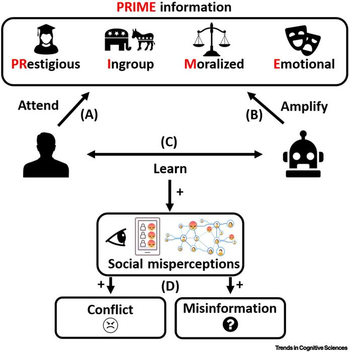

Understanding the Problem
Contemporary democratic systems face a crisis of accountability. Political elites increasingly deploy sophisticated strategies of relatability to obscure their structural power while redirecting public attention away from material conditions and toward emotionally charged cultural conflicts. This phenomenon represents a fundamental challenge to democratic governance, transforming substantive policy debate into performative identity politics and enabling powerful actors to evade responsibility for their decisions.
The construction of relatability by elite actors serves as strategic camouflage. By adopting the language, aesthetics, and grievances of ordinary citizens, these figures collapse the perceived distance between ruler and ruled [1]. This performance of ordinariness creates a protective shield around structural power. When criticism emerges, it can be reframed not as an attack on concentrated authority, but as an assault on the people themselves. Through this mechanism, accountability becomes socially illegitimate, and those who question elite actions are cast as elitist themselves.
🎧 Audio Clip 1: What Is Manufactured Relatability?
When we think about political influence, we usually think about policies or facts. But today, influence often starts with something simpler: relatability. Manufactured relatability is when powerful political figures try to seem like regular people so they can gain trust and emotional support.
This can look like using casual language, sharing personal stories, complaining about "elites" even though they are powerful themselves, or acting like outsiders who are being treated unfairly. These tactics make people lower their guard. When someone feels familiar or relatable, we are less likely to question what they are saying.
This matters because relatability is not neutral. It can be used as a tool to persuade. Once people trust a leader emotionally, that leader can influence how they see events, who they blame, and what they believe is true. Instead of focusing on facts, people react based on feelings, which makes misinformation and manipulation easier.
Social media platforms have fundamentally altered the architecture of political communication. By enabling direct engagement between elites and publics while bypassing traditional journalistic gatekeepers, these platforms create new opportunities for manipulation [2]. Political figures can now craft emotionally resonant messages that spread rapidly through algorithmically amplified networks, generating what researchers term "political noise" that drowns out substantive discussion [3].

🎧 Audio Clip 2: Social Media, Algorithms, and Political Noise
Social media plays a huge role in spreading political misinformation, not because it prefers lies, but because it prefers emotion. Algorithms push content that keeps people engaged, and emotions like anger, fear, and outrage spread much faster than calm, factual information.
Because of this, emotional political content gets more attention. Researchers call this "political noise," where loud, dramatic posts drown out thoughtful discussion. Instead of helping people understand complicated issues, social media often rewards extreme and oversimplified views.
Manufactured relatability fits perfectly into this system. When political figures talk directly to followers in emotional, personal ways, their messages spread fast and avoid traditional fact-checking. This makes it harder for people to tell the difference between reliable information and emotional manipulation.
The implications extend beyond individual deception. This system creates conditions where complex institutional failures are compressed into emotionally legible narratives centered on culture war grievances and moral panics. Political discourse shifts from policy evaluation to identity defense, generating high-volume noise that crowds out material analysis [4]. Citizens become increasingly unable to distinguish between genuine threats to their wellbeing and manufactured controversies designed to distract from elite actions.
Critical Insight: The Displacement of Material Politics
When elite actors successfully manufacture relatability, they transform the terrain of political contestation. Rather than debating resource distribution, labor rights, or environmental policy, public discourse becomes consumed by symbolic conflicts over identity and authenticity. This displacement serves elite interests by rendering invisible the structural mechanisms through which power operates and wealth is extracted.

Empirical Evidence
Research across multiple domains provides substantial evidence for the strategic deployment of relatability as a mechanism for manufacturing political noise and deflecting accountability. Studies demonstrate that elite actors deliberately time controversial actions to coincide with moments of public distraction, exploit social media platforms to bypass journalistic scrutiny, and leverage identity-based messaging to increase partisan compliance while reducing critical evaluation.
Strategic Timing and Distraction Politics
Empirical analysis reveals that political elites strategically time unpopular measures to coincide with newsworthy events that distract media and public attention [5]. This practice represents a deliberate attempt to shadow genuinely important developments with manufactured noise. Research examining Israeli military actions found that attacks were more likely to occur when United States news cycles were dominated by important predictable events, illustrating how elites exploit media attention cycles to minimize scrutiny [5].
The calculated nature of this timing demonstrates selective risk-taking. Strategic timing applies particularly to actions that bear risk of civilian casualties and are not too costly to postpone [5]. This selectivity highlights how elites calculate which actions will provoke public attention versus which can be masked. The public may perceive these figures as decisive or competent, thereby enhancing their relatability, while simultaneously diverting focus from morally questionable actions and manufacturing political noise that deflects blame.
🎧 Audio Clip 3: "Us vs. Them" and the Manufacturing of Blame
One of the most powerful tactics used by political leaders is creating an "us versus them" mindset. This divides people into groups: the "good" people who support the leader and the "bad" people who are blamed for problems.
Research on populist leaders shows that this kind of thinking builds strong loyalty. When people feel like they are part of an "us," they are more likely to defend leaders even when they do something wrong and more likely to blame outsiders instead. This helps leaders avoid responsibility by shifting blame.
Instead of talking about policy failures or real causes of problems, attention is redirected toward enemies like immigrants, political opponents, journalists, or institutions. This fuels polarization and turns serious issues into arguments filled with anger rather than solutions.
Direct Communication and Elite Cues
Social media platforms have fundamentally transformed elite-public communication by enabling political figures to speak directly with constituents while bypassing traditional media filters [6]. By speaking directly to followers, elites appear more relatable and approachable, increasing their ability to frame messages in ways that generate political noise and manipulate social blame because followers perceive them as "one of us" [6].

Concrete evidence demonstrates the real-world impacts of these communications. Research found that tweets calling for the "liberation" of Minnesota, Virginia, and Michigan from pandemic restrictions increased human mobility and reduced compliance with public health orders in targeted states [6]. This relatable messaging, framed in emotive, populist language, motivated tangible behavioral changes. It created political noise around defiance rather than public health, shifting social blame onto government restrictions instead of elite actors who undermined collective safety measures.
The effectiveness of these elite cues varies systematically across demographic groups. The effects were strongest in Republican-majority counties, while Democratic areas showed minimal change [6]. This pattern reveals how relatability is amplified by shared identity. Elite actors leverage partisan alignment to manufacture political noise selectively, influencing some groups more than others while deflecting blame toward opponents or institutions.
Algorithmic Amplification and Emotional Contagion
Platform algorithms prioritize content that generates engagement, and emotions such as anger, fear, and outrage spread significantly faster than calm, factual information [3]. This structural feature of digital communication ecosystems creates ideal conditions for the spread of manufactured relatability. Political influencers and elites command large audiences but face minimal requirements to follow journalistic standards, giving them freedom to share opinions or misleading information without strong accountability [7].
Evidence of Systematic Manipulation: Research documents that political elites not only exploit naturally occurring distractions but actively generate events and create distractions themselves [8]. This represents a shift from opportunistic timing to deliberate manufacture of political noise, using relatable narratives or controversies to shift public blame or hatred toward others.
A common manipulation tactic involves creating an "us versus them" mindset, where supporters are encouraged to see themselves as part of a group while opponents are blamed or treated as enemies [7]. Emotional language and symbols are deployed to trigger fear and anger, which spread much more rapidly online than factual information [7]. This mechanism connects directly to manufactured relatability because these figures gain influence by sounding relatable and personal, building trust that makes audiences more likely to believe and share their messages.

The Limits of Elite Explanations
Research on political accountability reveals significant limitations to traditional mechanisms of elite justification. Political leaders routinely attempt to avoid blame by explaining their decisions and making them seem reasonable or helpful to the public [9]. However, when others question the real intentions of a political leader, those explanations stop working effectively. Accusations that a politician is acting for selfish reasons can rapidly increase public suspicion [9].
When people become suspicious, they stop trusting what leaders say and begin to doubt their motives. Even when counterclaims come from less trustworthy sources, they can still heavily increase blame because simply hearing that a politician has hidden intentions is often enough to break trust [9]. This dynamic causes political discussions to shift away from substantive policy debate toward character attacks, creating confusion and intensifying polarization. The phenomenon demonstrates how manufactured relatability can backfire when publics become aware of strategic performance, yet it also reveals how easily distrust can be weaponized to generate additional political noise.
Mechanisms and Specifics
Understanding how manufactured relatability functions requires examining the specific mechanisms through which elite actors deploy these strategies and the precise ways they generate political noise while deflecting accountability. These mechanisms operate across multiple levels, from individual psychological processes to structural features of media ecosystems.
Relatability as Strategic Camouflage
Elite actors use performed ordinariness to obscure structural power. By adopting the language, aesthetics, and grievances of "regular people," they collapse perceived distance between ruler and ruled [1]. This performance serves a crucial function: criticism is reframed as an attack on the people themselves, not on power. Accountability becomes socially illegitimate because challenging elite actions is portrayed as an elitist gesture that demonstrates contempt for ordinary citizens.

The mechanism operates through identification. When publics perceive leaders as sharing their identity, values, and struggles, they extend trust and sympathy that would not be granted to overtly powerful figures. This identification creates protective insulation around elite actors, making it socially and emotionally difficult for supporters to acknowledge wrongdoing or policy failures. The leader's interests become fused with the group's interests, rendering critique an act of betrayal.
Noise Manufacturing Through Identity Compression
Relatability enables the compression of complex institutional failures into emotionally legible narratives centered on culture war grievances, moral panics, and narratives of betrayal [4]. Rather than grappling with the structural causes of economic precarity, environmental degradation, or democratic erosion, political discourse becomes consumed by symbolic battles over identity and recognition.
This compression serves elite interests by shifting attention away from material conditions and toward cultural conflicts. When citizens are mobilized around questions of identity rather than questions of power and resource distribution, the fundamental structures of economic and political inequality remain unexamined. Political discourse shifts from policy evaluation to identity defense, creating high-volume noise that crowds out material analysis [4].
The Populist Playbook
Research on populist leadership reveals systematic patterns in how elite actors deploy relatability. Populist leaders gain support by acting like regular people, making followers feel more connected and more likely to trust what they say [10]. These leaders bring people together by talking about shared problems and frustrations, helping supporters feel like they belong to the same group. A common tactic involves dividing people into "us" and "them," with supporters seen as good while other groups or leaders are blamed for problems [10].
Outsourcing Blame to Horizontal Targets
A crucial mechanism involves redirecting anger away from vertical power structures toward lateral social groups such as immigrants, academics, urban voters, or marginalized communities [10]. This outsourcing of blame serves multiple functions simultaneously. It provides an emotionally satisfying explanation for genuine grievances, channeling frustration toward visible and accessible targets rather than abstract structural forces or powerful institutions.
Social conflict becomes internalized within the population, stabilizing elite dominance while appearing populist. The performance of relatability is essential to this mechanism because it positions the elite actor as sharing the frustrations of ordinary people while directing attention toward scapegoats. Leaders often claim their group has been treated unfairly in the past, making followers feel angry and more loyal [10]. Blame and fear-based messages spread quickly online and can turn frustration into severe hate toward different groups [10].
Affective Authority Replaces Epistemic Authority
Manufactured relatability operates by privileging emotional resonance over factual accuracy. Feeling "understood" becomes proof of legitimacy, independent of whether the understanding is accurate or the proposed solutions are viable. This shift from epistemic to affective authority represents a fundamental transformation in how political legitimacy is constructed and maintained.
🎧 Audio Clip 4: Why This Matters for Truth and Media Literacy
Understanding manufactured relatability is really important in today's post-truth world. Misinformation is not always about fake facts. It is often about emotional storytelling. When people are influenced through identity, fear, and relatability, loyalty can matter more than truth.
This connects directly to literature examining how people in power control reality by shaping narratives instead of relying on evidence. The same strategies we see in fiction are now being used in real political messaging, especially on social media.
By recognizing these tactics, people can become more critical media consumers. Instead of just asking, "Do I agree with this?" we should ask, "How is this trying to make me feel, and why?" Media literacy is not just about spotting lies. It is about understanding how emotions can be used to shape what we believe.
Truth becomes subordinated to affect, allowing contradictory or false claims to persist as long as they feel authentic [7]. This creates conditions where evidence-based argumentation loses effectiveness. Presenting facts that contradict the emotionally satisfying narrative provided by a relatable leader often strengthens rather than weakens commitment, as contradictory information is processed as evidence of persecution by elites who do not understand or care about ordinary people.
Weaponized Authenticity as Preemptive Defense
By presenting themselves as flawed, casual, or persecuted, elites inoculate against scandal and critique. Traditional political norms emphasized dignity, formality, and consistency as markers of fitness for leadership. Manufactured relatability inverts these expectations, treating imperfection and norm-violation as evidence of authenticity. This strategic deployment of perceived vulnerability creates a situation where exposure no longer delegitimizes power but instead reinforces it by confirming the actor's "realness."

This mechanism is particularly evident in how political figures excel at creating distractions, generating constant controversy and entertainment that gives administrations room to enact policies that are actually unpopular with general voters [8]. Flooding the airwaves with entertainment and controversy helps elites evade scrutiny [8]. Relatability is constructed through constant visibility and engagement, even if through negative or polarizing content, while accountability is diffused. Social blame is redirected from the elite actor to the chaos they create.
Deflection and Corporate Tactics in Political Sphere
Techniques borrowed from corporate communications increasingly appear in political messaging. Deflection marketing represents the art of corporate blame-shifting, where organizations redirect attention from their own problematic practices toward other targets [11]. In the political realm, this manifests as elite actors attributing systemic failures to individual bad actors, cultural pathologies, or out-groups rather than acknowledging structural problems or policy failures.
Similarly, practices analogous to greenwashing appear in political discourse, where superficial gestures toward progressive values mask continued maintenance of harmful systems [12]. Elite actors perform relatability through symbolic alignment with popular concerns while actual policy and resource allocation remain unchanged or move in opposite directions. This creates additional noise in the political environment, making it difficult for citizens to distinguish genuine reform efforts from performative gestures.
Media and Documentation
Visual and textual documentation provides concrete illustrations of how manufactured relatability operates in contemporary political communication. The following collection demonstrates the mechanisms through which elite actors deploy strategic performances of ordinariness, generate political noise, and redirect blame away from structural accountability.
Visual representation of the mechanisms connecting manufactured relatability to political noise generation and blame displacement. This diagram illustrates how elite actors leverage performed ordinariness to obscure structural power while redirecting public attention.
Documentation of how platform algorithms prioritize emotionally charged content, creating conditions favorable to the spread of manufactured relatability and political noise over substantive policy discussion.
Comparative analysis showing the shift from material policy-focused political discourse to identity-based cultural conflict, demonstrating the compression of institutional failures into emotionally legible narratives.
Timeline evidence correlating controversial policy actions with major news events, documenting the deliberate exploitation of public distraction by elite actors seeking to minimize scrutiny.
Network analysis showing pathways through which elite actors bypass traditional media gatekeepers, enabling direct deployment of relatability-based messaging to partisan audiences.
Data visualization demonstrating differential propagation rates of emotional versus factual content across social media platforms, revealing structural advantages for manufactured relatability.
Conceptual illustration of how performed ordinariness collapses perceived distance between elite actors and general publics, creating protective insulation against accountability mechanisms.
Visual representation contrasting vertical accountability structures with horizontal blame attribution, showing how elite actors redirect anger toward lateral social groups rather than power structures.
Comparative analysis of traditional versus contemporary markers of political legitimacy, documenting the inversion that treats norm-violation as evidence of authenticity rather than unfitness.

Documentation of specific instances where manufactured relatability mechanisms generated measurable impacts on public behavior, policy outcomes, and accountability evasion.
Understanding Media Manipulation
The documented evidence reveals systematic patterns in how elite actors exploit contemporary media ecosystems. Traditional journalistic institutions operated as gatekeepers, applying professional standards of verification and contextualization before information reached public audiences. The rise of social media platforms has fundamentally altered this architecture, enabling direct communication between elites and publics while removing institutional checks on accuracy and framing [6].
This transformation creates ideal conditions for manufactured relatability because emotional authenticity can be performed without the constraints imposed by journalistic norms. Political figures can craft messages optimized for algorithmic amplification, knowing that platforms prioritize engagement over accuracy and that emotionally charged content spreads more rapidly than nuanced analysis [3]. The result is an information environment saturated with political noise, where substantive discussion becomes drowned out by performative controversy.
Critical Analysis: Theoretical Implications
The mechanisms documented throughout this research initiative carry profound implications for democratic theory, political epistemology, and the future of accountability in liberal governance systems. Understanding manufactured relatability requires grappling with fundamental questions about the relationship between authenticity and authority, the role of affect in political legitimacy, and the structural conditions that enable elite manipulation.
The Crisis of Epistemic Authority
Traditional liberal democratic theory presumed that rational deliberation among informed citizens would produce legitimate political outcomes. This model depended on shared epistemic standards, where factual claims could be adjudicated through reference to evidence and expertise held recognized authority in matters of technical complexity. The deployment of manufactured relatability fundamentally undermines these presumptions.
When affective resonance replaces epistemic authority as the basis for political legitimacy, the entire architecture of evidence-based governance collapses. Citizens no longer evaluate political claims based on their correspondence to reality but rather on their alignment with identity and their capacity to generate emotional satisfaction. This transformation represents what some theorists term a "post-truth" condition, though this framing risks obscuring the active construction involved. Truth has not simply eroded through general cultural forces. Rather, elite actors have deliberately cultivated alternative legitimacy structures that privilege feeling over knowing.
The implications extend beyond individual instances of misinformation. When manufactured relatability succeeds in establishing affective authority, it creates self-reinforcing feedback loops. Evidence that contradicts the emotionally satisfying narrative is processed not as reason for reconsideration but as proof of elite persecution. Fact-checking and correction thus often strengthen rather than weaken attachment to false claims, because the very act of correction confirms the narrative that establishment institutions oppose and misunderstand the relatable leader and their authentic connection to ordinary people.
Identity Compression and the Displacement of Material Politics
Perhaps the most consequential mechanism documented in this research involves the compression of material political conflict into cultural identity struggles. Elite actors leverage manufactured relatability to transform questions about resource distribution, labor rights, environmental policy, and economic structure into battles over symbolic recognition and cultural authenticity. This displacement serves elite interests by rendering invisible the actual mechanisms through which power operates and wealth is extracted.
The theoretical sophistication of this mechanism deserves emphasis. Rather than simply lying about material conditions or denying problems, elite actors acknowledge genuine grievances while systematically misdirecting attention toward lateral targets. Economic precarity becomes explained through immigration or cultural change rather than through labor market structure or capital's increasing share of national income. Environmental degradation becomes framed as a question of individual virtue signaling rather than systemic production for profit. Democratic erosion becomes presented as necessary defense against elites who despise ordinary citizens rather than as concentration of power in fewer hands.
This compression generates what can be understood as "noise" in multiple senses. First, it creates literal information overload, flooding media ecosystems with constant cultural controversy that crowds out substantive policy discussion. Second, it generates epistemological noise, making it increasingly difficult for citizens to distinguish signal from distraction and to identify which conflicts actually matter for their material conditions. Third, it produces affective noise, keeping populations in states of heightened emotional arousal that inhibit careful reflection and deliberation.
The Paradox of Populist Elitism
Research on populist leadership reveals a striking paradox [10]. Leaders who position themselves as outsiders challenging corrupt elites are themselves typically members of economic and political elites, often possessing extraordinary wealth and institutional power. The performance of relatability enables this contradiction to persist without generating cognitive dissonance among supporters.
This paradox functions through several mechanisms. First, the definition of "elite" becomes culturally rather than materially specified. Elites are identified not by wealth or power but by cultural markers such as education, urban residence, cosmopolitanism, or progressive social views. Second, the populist leader's wealth and power become reinterpreted as proof of competence and success rather than as markers of elite status. Third, any criticism of the leader's elite position is framed as missing the point, because what matters is not material status but authentic connection to and advocacy for ordinary people.
The theoretical implications are profound. If elite status can be performed away through strategic relatability, then the concept of accountability to power loses coherence. The very mechanisms through which liberal democracy was supposed to constrain concentrated authority become inverted, with calls for accountability reframed as illegitimate elite attacks on authentic popular representation.
Algorithmic Amplification and Structural Bias
The success of manufactured relatability cannot be understood purely through individual psychology or deliberate elite strategy. Structural features of contemporary communication infrastructure actively favor these tactics. Platform algorithms optimize for engagement, and engagement correlates strongly with emotional arousal rather than factual accuracy or substantive insight [3].
This creates what might be termed "structural complicity" between elite actors and media platforms. Neither party necessarily intends to undermine democratic deliberation, yet the interaction between strategic manipulation and algorithmic amplification produces systematic bias toward emotional noise over substantive discussion. The platforms profit from engagement regardless of its epistemic value, while elite actors benefit from the noise that obscures their exercise of power.
Addressing this structural dimension requires more than fact-checking or media literacy education, though both remain important. It demands fundamental reconsideration of how communication infrastructure is organized and whose interests it serves. As long as platforms profit from engagement without accountability for epistemic quality or democratic functioning, they will continue to amplify manufactured relatability and political noise.
The Weaponization of Authenticity
Traditional political norms treated consistency, dignity, and adherence to institutional procedures as markers of fitness for leadership. Manufactured relatability inverts these expectations, treating norm-violation as evidence of authenticity and formal propriety as proof of disconnection from ordinary people. This inversion has profound consequences for accountability mechanisms.
When scandal and exposure no longer damage but actually enhance elite credibility by confirming "realness," traditional checks on power lose effectiveness. Investigative journalism, whistleblowing, and institutional oversight all depend on the assumption that revealing misconduct will generate costs for powerful actors. If revelation instead reinforces support by proving the leader is persecuted by establishment elites, then the entire accountability infrastructure fails.
This represents what might be termed "weaponized authenticity." The performance of imperfection and casualness becomes armor against critique. Every attempt to hold power accountable can be reframed as confirmation of the narrative that elites are attacking the authentic representative of ordinary people. The more evidence of misconduct emerges, the more supporters rally to defend their champion against persecution.
Horizontal Blame and the Stabilization of Hierarchy
The mechanism through which elite actors redirect anger away from vertical power structures toward lateral social groups represents a sophisticated form of social control [10]. By outsourcing blame to immigrants, racial minorities, gender and sexual minorities, urban populations, or other marginalized groups, elite actors channel genuine grievances in directions that do not threaten their own power.
This horizontal blame attribution serves multiple functions simultaneously. It provides emotionally satisfying targets that are concrete and accessible rather than abstract structural forces. It activates existing prejudices and social hierarchies, requiring less persuasive effort than creating entirely new frameworks. It generates conflict within subordinate populations, preventing coalition formation that might threaten elite interests. And it positions the elite actor as defender of one subordinate group against another, obscuring their role in maintaining the hierarchy that subordinates both.
The theoretical implication is that manufactured relatability functions as a mechanism for stabilizing existing power structures while appearing to challenge them. The populist leader performs opposition to elites while actually serving elite interests by preventing the formation of cross-cutting coalitions based on shared material conditions. Social conflict becomes internalized within the population rather than directed upward at concentrated power.
Toward Democratic Resilience
Understanding these mechanisms creates possibilities for resistance and reform, though neither will be simple. At the individual level, media literacy education must evolve beyond simple fact-checking to encompass critical analysis of emotional manipulation and identity-based messaging [7]. Citizens need tools for recognizing when they are being invited to feel rather than think, and when their identity is being mobilized to prevent critical evaluation of power.
At the structural level, communication infrastructure requires fundamental reconsideration. Platform accountability must extend beyond content moderation to encompass responsibility for the epistemic quality of information ecosystems. This might involve regulatory intervention to reduce the amplification of emotionally manipulative content, creation of alternative platforms organized around different principles, or more fundamental transformation of how digital communication is structured and governed.
At the political level, rebuilding epistemic authority requires reconstructing institutions and practices that can command public trust while remaining genuinely accountable. This demands addressing the material conditions that create grievances elite actors exploit, rebuilding investigative journalism and institutional oversight, and creating new forms of democratic participation that cannot be as easily captured by manufactured relatability.
None of these interventions will succeed in isolation. The crisis of manufactured relatability reflects deep structural problems in contemporary capitalism and liberal democracy. Addressing it requires coordinated action across multiple domains, sustained over time, guided by clear understanding of the mechanisms through which elite actors evade accountability and manufacture noise that obscures their exercise of power.
Sources Cited
[1]
Uysal, Mete Sefa, et al. "An Integrative Social Identity Model of Populist Leadership." Social and Personality Psychology Compass, vol. 16, no. 12, Nov. 2022, https://doi.org/10.1111/spc3.12713.
[2]
"Covert Control: How Political Elites and Influencers Use Manipulation on Social Media." In-Mind Magazine, Issue 9/2025, www.in-mind.org/article/covert-control-how-political-elites-and-influencers-use-manipulation-on-social-media.
[3]
"Blameocracy: Causal Rhetoric in Politics." arXiv:2504.06550, https://arxiv.org/abs/2504.06550.
[4]
"Testing the Greenwashing Assessment Framework." Ecology and Society, vol. 30, no. 2, art. 31, https://ecologyandsociety.org/vol30/iss2/art31/.
[5]
"The Politics of Distraction: Evidence from Presidential Executive Orders." CEPR VoxEU, https://cepr.org/voxeu/columns/politics-distraction-evidence-presidential-executive-orders.
[6]
"Elite Cues and Noncompliance." American Political Science Review, Cambridge Core, https://www.cambridge.org/core/journals/american-political-science-review/article/elite-cues-and-noncompliance/8A5F20C549D02AADB490223B2E3F2B7E.
[7]
"Covert Control: How Political Elites and Influencers Use Manipulation on Social Media." In-Mind Magazine, www.in-mind.org/article/covert-control-how-political-elites-and-influencers-use-manipulation-on-social-media.
[8]
"The Politics of Distraction." Harris School of Public Policy, The University of Chicago, https://harris.uchicago.edu/news-events/news/politics-distraction.
[9]
Robison, Joshua. "Can Elites Escape Blame by Explaining Themselves? Suspicion and the Limits of Elite Explanations." British Journal of Political Science, vol. 52, no. 2, Feb. 2021, pp. 553-72, https://doi.org/10.1017/s000712342000071x.
[10]
Uysal, Mete Sefa, et al. "An Integrative Social Identity Model of Populist Leadership." Social and Personality Psychology Compass, vol. 16, no. 12, Nov. 2022, https://doi.org/10.1111/spc3.12713.
[11]
"Deflection Marketing: The Art of Corporate Blame-Shifting." Whole Whale, https://wholewhale.com/tips/deflection-marketing/.
[12]
"Greenwashing: A Form of Corruption?" U4 Anti-Corruption Resource Centre, https://www.u4.no/blog/greenwashing-a-form-of-corruption.
[13]
"Democracy Perception Index." More in Common, https://www.moreincommon.com/media/5yvfykfc/more-in-common-bosch-democracy-full-report-eng.pdf.
Additional Research Resources
This initiative draws on interdisciplinary scholarship spanning political science, communication studies, social psychology, and democratic theory. The research documented here represents initial findings from an ongoing investigation into mechanisms of elite manipulation and democratic accountability.
For further engagement with these questions, scholars and practitioners are encouraged to examine the full corpus of cited works, particularly recent studies on algorithmic amplification, populist communication strategies, and the transformation of political epistemology in digital media ecosystems.